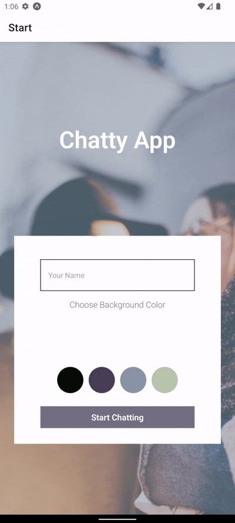
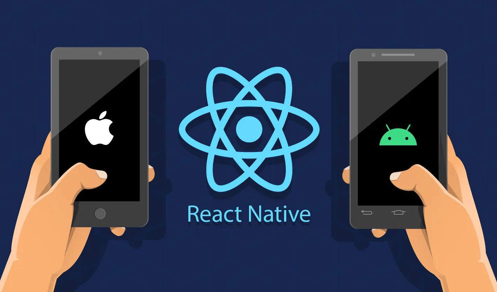
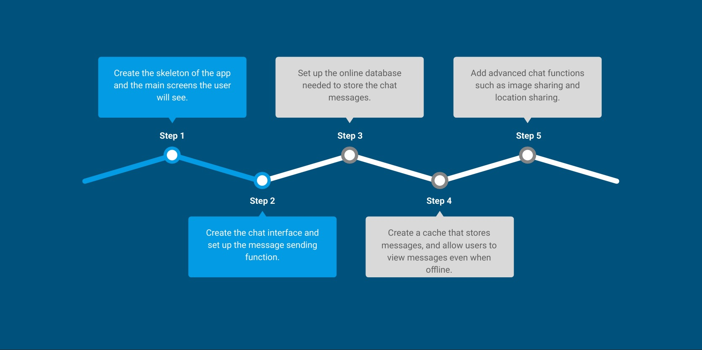
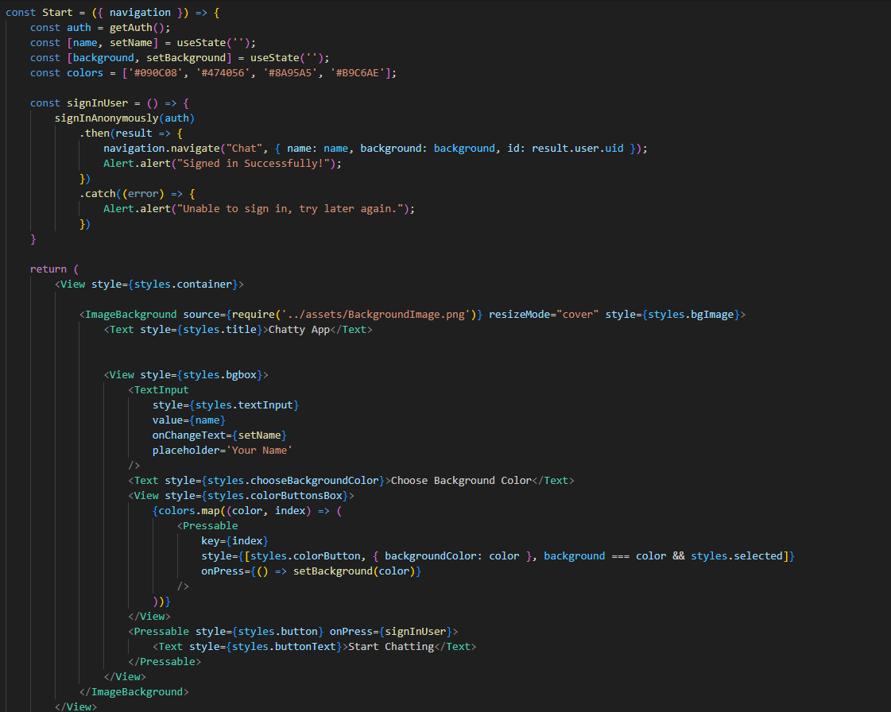
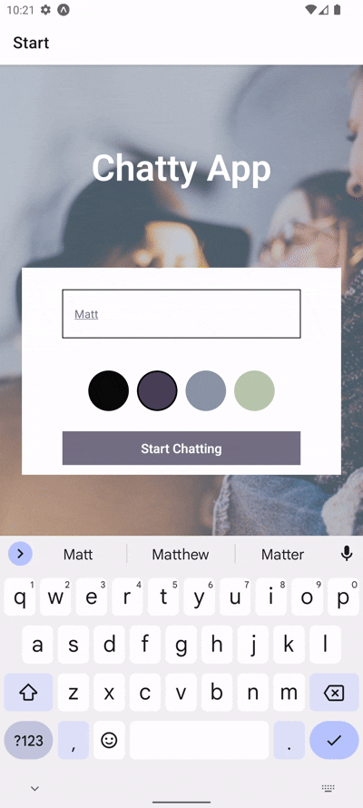
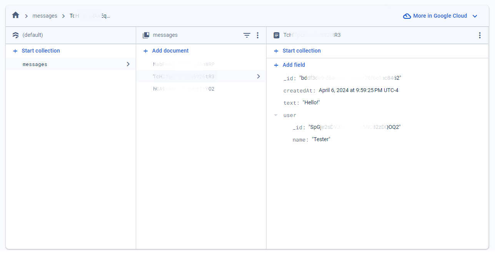
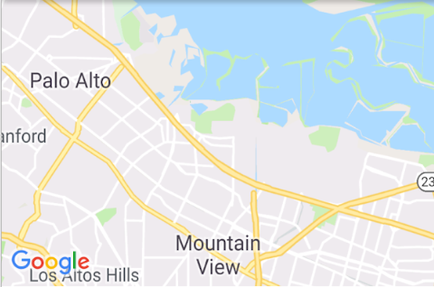

Case Study for MyChatApp
Purpose and Context
The MyChatApp is a mobile application designed as part of the CareerFoundry development course. The App was built using React Native and Expo as practice designing an App on mobile. It allows the user to enter a chat interface and send messages, photos, or even their location.

Objective
- Create a mobile app capable of sending messages from one phone to another.
- The app will be linked to online data storage to compile all messages sent.
- The app will also store messages on the client side, so a user can check previous messages even while offline.
- The User should be able to choose their own chat name and background color.
- The User should be able to send images, as well as their current location.
Technologies Used
The objective was to create a mobile app from the ground up, so several different technologies were needed to put it all together. Google Firestore was chosen as the way to store all of our message data with React Native forming the backbone of the app. Expo was the main testing program, with Android Studio being used as our final test.

Project Timeline

Forming the App
The first step was to create the skeleton of the app. After setting up the React Native environment a Start screen and a Chat screen were made using Expo. Added to the start screen was the ability to choose your name and background color. Navigation was added so the user can go from the start screen to the chat screen.


Creating the Chat Interface
The next step was creating the chat interface itself. Using Gifted Chat (A library for React Native) the UI for the chat screen was set, as well as the ability to open the keyboard and send a message. After some trial and error, the keyboard was fixed so it would never unintentionally cover any messages.
User Authentication & Data Storage
A Firestore database was created to store messages from the app. The database was linked to the start screen, authenticating a user anonymously when they enter the chat screen. The chat screen was set to fetch any previous messages from the database, and when a user sent a message it would then be added to the database.

Client Side Storage
The next step was allowing the user to access old messages even when offline. The app was made to check if it had a connection to the database whenever the chat was opened.
- If a connection was present the app would pull data from the database and work as normal.
- If a connection was not present, the app would alert the user that the connection was down and load messages from a cache stored on the device


Advanced Chat Functions
The final step was adding more advanced chat functions to the app A function to send an image was added, and the user can decide whether to send an image from storage or to take a picture. The database was updated so that images can be sent, and are stored in a separate category. Another function was added that allows the user to share their location. A function was set up to find the users location, and that location is then converted to a map image using React Native props.
Retrospective
-
What went well?
I learned a lot about mobile apps, and how they can vary quite a lot from ones designed for other devices. I also had a lot of fun using different software to test out my builds. -
What didn't go so well?
The map function was extremely finicky and I struggled a lot in testing to get it to work the way I desired. By the end I got it to work properly, but I think if I had a better handle on the function itself I could have avoided those struggles. -
What would I do differently?
I would add more chat functions! I already implemented a camera, so I think it would have been cool to add a way to send videos. Another small change I would add is more colors to choose as a background. -
Final Thoughts
I am really happy with how this project turned out and will definitely work more with React in the future. It was a good learning experience for my coding, but also for my testing on different platforms.